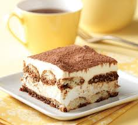
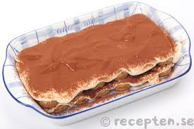
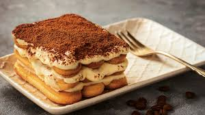

Publikuar me 22.07.2022
Tiramisu
 
Tiramisuja është ëmbëlsira italiane më e njohur në gjithë botën.
Thuhet se kjo ëmbëlsirë e ka origjinën në Siena (Toskanë). Rreth shekullit të XVII disa pastiçierë vendosën të përgatisnin një ëmbëlsirë në nderim të Dukës së Toskanës Cosimo de Medici.
Ata menduan të bënin një ëmbëlsirë me përbërës të thjeshtë, por jashtëzakonisht e shijshme
Fillimisht mbledhim te gjithe perberesit qe na nevojiten.
Përbërësit për 6-7 persona:
- (tavë drejtkëndëshe 30x20 cm)
- 500g djathë Mascarpone
- 6 vezë të freskëta në temperaturë ambienti (të verdhat veç nga të bardhat)
- 120g sheqer
- 5-6 filxhanë kafeje ekspres të vakët ku kemi tretur 2 lugë sheqer
- 300-400g biskota Savoiardi
- kakao e hidhur për spërkatje
Përgatitja:
- Rrahim me rrahësin elektrik të verdhat e vezëve dhe sheqerin derisa të bëhen si shkumë, afërsisht pesë minuta.
- Djathin Mascarpone e punojmë pak me pirun ose me lugë që të bëhet si krem dhe e shtojmë në tasin me të verdhat e vezëve.
Vazhdojmë ta përziejmë me rrahësin elektrik një deri në dy minuta.
- Bëjmë marengë me të bardhat e vezëve, i shtojmë te tasi I kremit dhe i përziejmë me kujdes nga poshtë lart me spatula ose me lugë druri.
- Biskotat i lagim te kafeja e vakët (nuk duhet të qullen shumë) dhe i vendosim në tavë pranë
njëra-tjetrës duke krijuar një shtresë, hedhim sipër një shtresë me krem, vazhdojmë me një shtresë tjetër biskotash me kafe dhe përsëri një shtresë kremi.
- E spërkasim me kakao të hidhur, e mbulojmë me letër alumini dhe e lëmë në frigorifer për një natë.
- Sipas dëshirës, në momentin që e shërbejmë mund ta zbukurojmë me çokollatë të zezë të copëtuar.

Rezultati perfundimtar.
| Produkti |
Cmimi |
| Keksa |
0.50 cent |
| Qumesht |
1 Euro |